اعتماد تعريف النوى المجرية النشطة بصريًا
على نماذج التجمعات النجمية
الملخص
أجرينا دراسة لقياس الفروق المنهجية الناتجة عن استخدام نماذج مختلفة للتجمعات النجمية في التعريف الطيفي البصري للنوى المجرية النشطة من النوع الثاني. فحصنا اختلاف كسور كشف AGN في 7069 من المجرات القريبة () ذات أطياف SDSS DR8 عند استخدام نماذج التجمعات النجمية
Bruzual & Charlot (2003, BC03)، وVazdekis et al. (2010, MILES)، وMaraston and Strömbäck (2011) ذات الفلزية الشمسية
(MS11solar).
إن تدفقات الخطوط المستحصلة باستخدام BC03 وMS11solar متاحة علنًا من إصدارات بيانات SDSS.
نجد أن قوالب BC03 تؤدي إلى نسب خطوط BPT أعلى منهجيًا، ومن ثم إلى كسور AGN أعلى، بينما تؤدي قوالب
MS11solar إلى نسب خطوط وكسور AGN أدنى منهجيًا مقارنة بقوالب MILES.
وباستخدام MILES معيارًا، ينتج عن BC03 25% من “الإيجابيات الكاذبة”، وينتج عن MS11solar 22% من “السلبيات الكاذبة”
عند استخدام حد Kewley et al. (2001a) لتعريف AGN.
يعتمد كسر المجرات التي يتغير تعريف AGN فيها باختلاف القوالب على اللمعان، إذ يتراوح من بضعة في المئة عند L[OIII]5007 erg  ويزداد إلى
ويزداد إلى  عند L[OIII]5007 erg .
وتشير هذه النتائج إلى أنه ينبغي أخذ اختيار القالب في الحسبان عند استخدام ومقارنة تدفقات خطوط الانبعاث وكسور AGN من فهارس مختلفة.
عند L[OIII]5007 erg .
وتشير هذه النتائج إلى أنه ينبغي أخذ اختيار القالب في الحسبان عند استخدام ومقارنة تدفقات خطوط الانبعاث وكسور AGN من فهارس مختلفة.
1 مقدمة
يمثل التحليل الطيفي البصري أداة قوية لسبر الخصائص الفيزيائية للنوى المجرية النشطة (AGN).
تتميز AGN ذات الخطوط العريضة (النوع الأول) بخطوط هيدروجين بالمر العريضة، وبقيم للعرض الكامل عند نصف القيمة العظمى
(FWHM) تصل إلى بضعة آلاف . أما AGN ذات الخطوط الضيقة (النوع الثاني)، فيلزم تمييزها
عن المجرات المكوِّنة للنجوم لأنها تبعث المجموعة نفسها من الخطوط المحظورة المتأينة، مثل [N II] 6584
و[O III]5007. وقد أبلغ Baldwin, Phillips and Terlevich (1981, المشار إليه فيما بعد بـ BPT) أولًا عن الفروق في نسب هذه الخطوط إلى خطوط هيدروجين بالمر الضيقة (أي H ،
وH
،
وH ) بين AGN والمجرات المكوِّنة للنجوم،
ثم دُرست لاحقًا في أعمال أخرى (مثلًا، Osterbrock & Pogge, 1985; Veilluex & Osterbrock, 1987; Kewley et al., 2001a; Kauffmann et al., 2003; Stasińska et al., 2006; Kewley et al., 2006; Cid Fernandes et al., 2010, 2011).
طوّر Kewley et al. (2001a) معايير فصل تستند إلى النمذجة النظرية لخطوط تشكل النجوم،
بينما عرّف Kauffmann et al. (2003) معايير فصل تجريبية استنادًا إلى أطياف مسح Sloan Digital Sky Survey (SDSS, York et al., 2000).
) بين AGN والمجرات المكوِّنة للنجوم،
ثم دُرست لاحقًا في أعمال أخرى (مثلًا، Osterbrock & Pogge, 1985; Veilluex & Osterbrock, 1987; Kewley et al., 2001a; Kauffmann et al., 2003; Stasińska et al., 2006; Kewley et al., 2006; Cid Fernandes et al., 2010, 2011).
طوّر Kewley et al. (2001a) معايير فصل تستند إلى النمذجة النظرية لخطوط تشكل النجوم،
بينما عرّف Kauffmann et al. (2003) معايير فصل تجريبية استنادًا إلى أطياف مسح Sloan Digital Sky Survey (SDSS, York et al., 2000).
لا تُظهر أطياف المجرات التي تحتوي على AGN سمات انبعاثية فحسب، بل تُظهر أيضًا خطوط امتصاص نجمية وانبعاثًا متصلًا من المجرات المضيفة. وقد أُنجز طرح مساهمة المجرة المضيفة من الضوء المتكامل في أعمال سابقة (مثلًا، Ho et al., 1997; Kewley et al., 2000, 2001b; Kauffmann et al., 2003) إما بملاءمة متعددة حدود محلية أو باستخدام قوالب (مثلًا، Bruzual & Charlot, 2003). فالأسلوب الأول سهل التنفيذ، ولا يعتمد على أي نماذج، ويمكن تطبيقه مباشرة حلًا سريعًا لتقدير مكوّني الامتصاص والمتصل، ولا سيما للأجرام ذات سمات الانبعاث الشديدة جدًا (مثل تلك الخاصة بـ Seyfert I AGN). غير أنه عندما يحتوي الطيف على سمات امتصاص غير مهملة، قد تتأثر دقة تدفقات خطوط الانبعاث. فسمات خطوط الانبعاث الضعيفة، ولا سيما المخفية ضمن مكوّني الامتصاص والمتصل، يمكن أن تُقدَّر بأقل من قيمتها بسهولة في ملاءمة متصل محلية متعددة الحدود. وفي هذه الحالات، يعطي استخدام القوالب النجمية لملاءمة الامتصاص والمتصل حلًا أدق. تتطلب ملاءمة الطيف الكامل وطرح مكوّني الامتصاص والمتصل سمات امتصاص قوية بما يكفي لمطابقتها مع القوالب النجمية. وبدلًا من ملاءمة الطيف الكامل، يمكن أيضًا استخدام تحليل المركبات الرئيسية (PCA) (مثلًا، Hao et al., 2005a; Greene & Ho, 2007; Allen et al., 2013) لتحديد أطياف المجرات الكامنة واستخراج خطوط الانبعاث.
نُشرت دراسات عدة تستند إلى التعريف الطيفي لـ AGN (مثلًا، Kauffmann et al., 2003; Miller et al., 2003; Kewley et al., 2006) باستخدام بيانات SDSS. ومن المعروف أن معدل كشف AGN يعتمد على تفاصيل معالجة البيانات (Hao et al., 2005a): مجالات الانزياح الأحمر، وقطع نسبة الإشارة إلى الضجيج في البيانات، والحد الذي يفصل AGN من النوع الثاني عن المجرات المكوِّنة للنجوم في مخططات BPT (أي إن المؤلفين قد تكون لديهم معايير مختلفة لتعريف AGN).
في هذا العمل، ندرس أثر استخدام نماذج مختلفة للتجمعات النجمية في تعريف AGN، وهو أثر لم يسبق قياسه كميًا. استخدم تعريف AGN في إصدارات بيانات SDSS أولًا Bruzual & Charlot (2003, BC03)، ويستخدم حاليًا Maraston and Strömbäck (2011) عند الفلزية الشمسية فقط (MS11solar)، قوالبَ لتحليل المكوّن النجمي. ومع توافر المزيد من نماذج التجمعات النجمية، تصبح الدراسات المنهجية لاعتماد تعريف AGN على النموذج النجمي المستخدم ممكنة. وهذا مهم لا لإيجاد أفضل قالب فحسب، بل أيضًا لفهم مزايا النماذج وحدودها. في دراستنا، نقارن النتائج المستمدة من نماذج التجمعات النجمية BC03 وMS11solar وVazdekis et al. (2010, MILES).
في القسم 2، نعرض كلًا من العينة الخاصة بدراستنا وإجراءنا لتحديد مرشحي AGN ذات الخطوط الضيقة. وفي القسم 3، نستعرض نماذج التجمعات النجمية المستخدمة في هذا التحليل. كما نصف كيف طبقنا نماذج التجمعات النجمية على بياناتنا. وتُعرض نتائجنا والآثار النسبية الناتجة عن تغيير القوالب في القسم 4، حيث نناقش أيضًا جوانب القوالب النجمية التي تفضي إلى نتائج مختلفة. ونقدم استنتاجاتنا في القسم 5. ويتضمن الملحق خصائص أخرى استكشفناها ولا تسبب فروقًا كبيرة في تعريف AGN من النوع الثاني، وهي مجال الأطوال الموجية، والتجمعات النجمية الفتية، وSeyfert II مقابل LINERs، وجودة البيانات.
2 عينة البيانات وتعريف AGN
هذا العمل جزء من جهودنا لبناء فهرس بصري شامل للسماء لـ AGN (Zaw, Chen and Farrar، قيد الإعداد، ويشار إليه أدناه بـ ZCF18)،
استنادًا إلى أطياف بصرية من مسح 2MASS Redshift Survey (2MRS, Huchra et al., 2012).
جُمّع 2MRS من أرصاد فريق 2MRS (باستخدام FAst Spectrograph لتلسكوب Tillinghast في
Fred L. Whipple Observatory في الشمال وCerro Tololo Interamerican Observatory في الجنوب) ومن فهارس أخرى، تشمل
إصدار بيانات SDSS (DR) 8، ومسح 6dF Galaxy Survey، وقاعدة NASA Extragalactic Database.
ومن بين كل العينات الفرعية، تمتلك عينة SDSS الفرعية أفضل نسب إشارة إلى ضجيج، وهي
العينة الوحيدة التي طُبق فيها على الأطياف معايرة مطلقة للتدفق وتصحيح تلوري.
إضافة إلى ذلك، يمكن استخدام تدفقات الخطوط من إصدارات بيانات SDSS للتحقق المتقاطع من عملنا.
لذلك نستخدم عينة SDSS الفرعية في دراستنا.
تتكون عينة SDSS الفرعية من أطياف 7069 مجرة ذات انزياح أحمر قدره .
وتغطي هذه الأطياف مجال الأطوال الموجية 3800–9200 Å، بدقة متوسطة قدرها
R 1800–2000.
1800–2000.
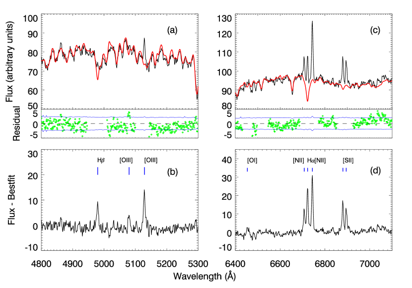
 ، وتمثل النقاط الخضراء البواقي في المناطق الخالية من
خطوط الانبعاث. لا يظهر خط انبعاث H
، وتمثل النقاط الخضراء البواقي في المناطق الخالية من
خطوط الانبعاث. لا يظهر خط انبعاث H الضعيف قبل طرح القالب. الألواح السفلية: أطياف البواقي التي تُظهر سمات خطوط الانبعاث بعد طرح أفضل نماذج الملاءمة (الامتصاصية).
الضعيف قبل طرح القالب. الألواح السفلية: أطياف البواقي التي تُظهر سمات خطوط الانبعاث بعد طرح أفضل نماذج الملاءمة (الامتصاصية). 2.1 تعريف مرشحي AGN من النوع الثاني
يرد وصف مفصل لاختيار مجرات خطوط الانبعاث
في ورقة الفهرس الخاصة بنا (ZCF18).
ونوجز العملية هنا باختصار.
بعد إعادة تقسيم أطياف البيانات والنماذج إلى الدقة الطيفية نفسها، وحجب مناطق خطوط الانبعاث المستخدمة في
تعريف AGN، أُنجزت ملاءمة للطيف الكامل لكل جرم من SDSS باستخدام
pPXF (Cappellari & Emsellem, 2004).
وفي إجراء الملاءمة، تُزاح أطياف النماذج إلى الانزياح الأحمر
للأطياف المرصودة وتُوسَّع لأخذ تشتت السرعات النجمية في الحسبان.
وتتكون كل ملاءمة من توليفة خطية من أطياف النماذج.
ويُشترط في الملاءات أن تعطي تشتت سرعة نجمية فيزيائيًا، ،
لكي تُعد مقبولة. يستخدم روتين الملاءمة طيف الخطأ المرفق بالبيانات لحساب
قيمة  مخفضة لكل ملاءمة مقبولة.
وطيف “أفضل ملاءمة” هو الطيف الذي
يصغّر
مخفضة لكل ملاءمة مقبولة.
وطيف “أفضل ملاءمة” هو الطيف الذي
يصغّر  المخفضة.
نقصر العينة على الأطياف التي تكون قيم
المخفضة.
نقصر العينة على الأطياف التي تكون قيم  المخفضة فيها أقل
من 2.55 في عملية ملاءمة الطيف الكامل، وهو ما يبقي من الأطياف ذات الملاءات الناجحة.
المخفضة فيها أقل
من 2.55 في عملية ملاءمة الطيف الكامل، وهو ما يبقي من الأطياف ذات الملاءات الناجحة.
يُستخدم طيف البواقي الناتج عن طرح نموذج أفضل ملاءمة من طيف البيانات
لتحليل سمات خطوط الانبعاث. وأكثر المجرات تأثرًا باختيار القوالب النجمية هي تلك ذات خطوط الانبعاث الضعيفة.
يبين الشكل 1 مثالًا يكون فيه خط انبعاث H غير مرئي بالعين في الطيف، لكنه يُعرّف بواسطة طرح القوالب
باستخدام قوالب MILES (Vazdekis et al., 2010).
غير مرئي بالعين في الطيف، لكنه يُعرّف بواسطة طرح القوالب
باستخدام قوالب MILES (Vazdekis et al., 2010).
في هذا العمل، نستخدم  ،
،
 ، [O III] 5007، و[N II] 6584 لتعريف المجرات بوصفها AGN من النوع الثاني.
نستنتج التدفق لكل خط من خطوط الانبعاث من طيف البواقي، وذلك بملاءمة مقاطع غاوسية.
وتُحسب تدفقات الخطوط تحت المقاطع الغاوسية الملائمة ضمن 3
، [O III] 5007، و[N II] 6584 لتعريف المجرات بوصفها AGN من النوع الثاني.
نستنتج التدفق لكل خط من خطوط الانبعاث من طيف البواقي، وذلك بملاءمة مقاطع غاوسية.
وتُحسب تدفقات الخطوط تحت المقاطع الغاوسية الملائمة ضمن 3 من قمة الخط، حيث إن
من قمة الخط، حيث إن  هو عرض غاوس الملائم للخط.
وتُحسب أخطاء التدفق (أي ضوضاء الخطوط) باعتبارها مجموعًا تربيعيًا لأطياف الخطأ ضمن
مجال الطول الموجي نفسه لخطوط الانبعاث.
ويُعرَّف خط الانبعاث بأنه خط يكون تدفقه مقسومًا على خطأ التدفق
أكبر من ثلاثة (أي S/N3) عند استخدام قوالب MILES.
نعرّف مجرات خطوط الانبعاث بأنها تلك التي تكون فيها جميع الخطوط التشخيصية الأربعة
(
هو عرض غاوس الملائم للخط.
وتُحسب أخطاء التدفق (أي ضوضاء الخطوط) باعتبارها مجموعًا تربيعيًا لأطياف الخطأ ضمن
مجال الطول الموجي نفسه لخطوط الانبعاث.
ويُعرَّف خط الانبعاث بأنه خط يكون تدفقه مقسومًا على خطأ التدفق
أكبر من ثلاثة (أي S/N3) عند استخدام قوالب MILES.
نعرّف مجرات خطوط الانبعاث بأنها تلك التي تكون فيها جميع الخطوط التشخيصية الأربعة
( ، و[O III] 5007، و
، و[O III] 5007، و و[N II] 6584) ذات S/N3.
توجد 3350 مجرة خطوط انبعاث في عينتنا.
نستخدم نسب خطوط BPT وهي [N II]/
و[N II] 6584) ذات S/N3.
توجد 3350 مجرة خطوط انبعاث في عينتنا.
نستخدم نسب خطوط BPT وهي [N II]/ و[O III]/
و[O III]/ ومعايير Kewley et al. (2001a)
لفصل
المجرات المكوِّنة للنجوم ومرشحي AGN من النوع الثاني، أي إن الأجرام الواقعة فوق خط Kewley et al. (2001a) تُعد AGN من النوع الثاني،
والأجرام الواقعة أسفل خط Kewley et al. (2001a) تُعد مجرات مكوِّنة للنجوم.
ومعايير Kewley et al. (2001a)
لفصل
المجرات المكوِّنة للنجوم ومرشحي AGN من النوع الثاني، أي إن الأجرام الواقعة فوق خط Kewley et al. (2001a) تُعد AGN من النوع الثاني،
والأجرام الواقعة أسفل خط Kewley et al. (2001a) تُعد مجرات مكوِّنة للنجوم.
3 قوالب النماذج
تُبنى نماذج التجمعات النجمية (SPM) بدمج مجموعة من الأطياف النجمية، المعروفة باسم مكتبة نجمية،
مع أوزان تعطى بدوال الكتلة الابتدائية.
ويُفترض أن تشترك مجموعة النجوم في
العمر نفسه والمكوّنات الكيميائية نفسها (أي الفلزية)، ولكن مع تنوع في الكتل النجمية.
ويشكل ضوؤها المتكامل طيف تجمع نجمي مفرد.
والصلة بين نماذج التجمعات النجمية والأطياف النجمية الفردية هي معاملات نجمية
مثل درجة الحرارة الفعالة ، والجاذبية السطحية  ، والفلزية
، والفلزية ![$\rm [Fe/H]$](equations/eq_0041.svg) .
وعندما تُبنى التجمعات النجمية، يُطبق مستوفٍ لتوليد شبكة النجوم
المستخدمة في دمج ضوء التجمع؛ انظر
Conroy (2013) وVazdekis et al. (2010) والمراجع الواردة فيهما للتفاصيل.
ويستند المستوفي إلى تغطية فضاء المعاملات للمكتبة النجمية الكامنة.
وعندما تكون النجوم محدودة في جزء معين من فضاء المعاملات، قد يكون المستوفي متحيزًا إذا لم تكن
البيانات المتاحة تغطي فضاء المعاملات بما يكفي.
يتكون كل نموذج للتجمعات النجمية من مجموعة من قوالب التجمع النجمي المفرد (SSP) ذات
عمر وفلزية محددين.
.
وعندما تُبنى التجمعات النجمية، يُطبق مستوفٍ لتوليد شبكة النجوم
المستخدمة في دمج ضوء التجمع؛ انظر
Conroy (2013) وVazdekis et al. (2010) والمراجع الواردة فيهما للتفاصيل.
ويستند المستوفي إلى تغطية فضاء المعاملات للمكتبة النجمية الكامنة.
وعندما تكون النجوم محدودة في جزء معين من فضاء المعاملات، قد يكون المستوفي متحيزًا إذا لم تكن
البيانات المتاحة تغطي فضاء المعاملات بما يكفي.
يتكون كل نموذج للتجمعات النجمية من مجموعة من قوالب التجمع النجمي المفرد (SSP) ذات
عمر وفلزية محددين.
تُستخدم قوالب Bruzual & Charlot (2003) على نطاق واسع لطرح مكوّنات الامتصاص النجمية والمتصل في تحليلات مجرات خطوط الانبعاث، لأنها تغطي مجالًا كبيرًا من الأطوال الموجية الطيفية ولأنها طُورت مبكرًا. وفي العقد الأخير، ومع تحسن كل من البيانات والنمذجة النظرية، بُنيت ونُشرت مكتبات نجمية أكثر (مثلًا، Chen et al., 2014; Sánchez-Blázquez et al., 2006; Gregg et al., 2006; Prugniel & Soubiran, 2001)، وأصبحت نماذج التجمعات النجمية المقابلة لها متاحة (مثلًا، Vazdekis et al., 2010; Le Borgne et al., 2004; Vazdekis et al., 2016; Maraston and Strömbäck, 2011).
في هذا العمل نقارن نماذج التجمعات النجمية MILES، ونماذج MS11solar القائمة على MILES، وGonzález Delgado et al. (2005, المشار إليه فيما بعد بـ G05)، وBC03. كانت تدفقات SDSS لـ DR8 مبنية على طرح المجرة المضيفة باستخدام BC03. ومؤخرًا، أتاح Thomas et al. (2013) علنًا تدفقات جديدة لأطياف DR8 باستخدام MS11solar. يستند نموذج MILES إلى أطياف نجمية بصرية مرصودة (Sánchez-Blázquez et al., 2006)؛ أما نموذج BC03 فقد بُني من توليفة من أطياف نظرية ومرصودة. ويشترك نموذج MS11solar القائم على MILES في مكتبة النجوم المدخلة نفسها مع نموذج MILES. أما نموذج G05 فقد بُني من أطياف نجمية نظرية، وهو أفضل نموذج نظري متاح. نستخدمه عندما تكون البيانات التجريبية غير مكتملة، مثلًا للتجمعات النجمية الفتية. وتوصف مكونات النماذج في القسم 3.1. ونظرًا إلى أن نماذج MILES مبنية من مكتبة MILES النجمية، وهي حاليًا أفضل مكتبة نجمية بصرية تجريبية وتستخدمها عدة نماذج للتجمعات النجمية على نطاق واسع (مثل Conroy & Gunn (2010); Maraston and Strömbäck (2011); Vazdekis et al. (2010, 2012))، لذلك نستخدم قوالب MILES معيارًا لنا.
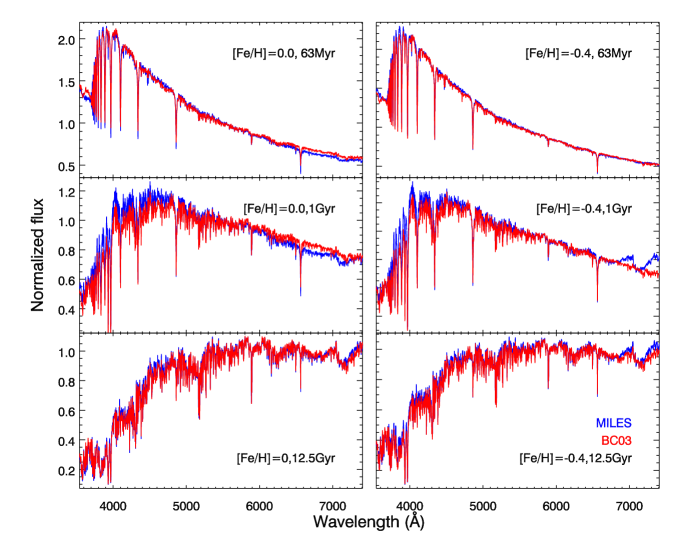
3.1 اختلافات نماذج التجمعات النجمية
لدى نماذج التجمعات النجمية خصائص مميزة عدة.
وتُعطى مجالات المعاملات للنماذج التي نقارنها في هذا العمل في الجدول 1.
وهي تختلف في مجالات العمر والفلزية، وكذلك في المكتبات النجمية. وسنستقصي كيف يؤثر كل من هذه العناصر في نتائجنا.
فيما يلي المكونات الرئيسية لنماذج التجمعات النجمية التي تصف الأطياف الفردية للأنظمة النجمية
من مصادر مختلفة. يستخدم BC03 أساسًا توليفة من المكتبة النجمية التجريبية
STELIB (Le Borgne et al., 2003)
وسلسلة من المكتبات النجمية النظرية BaSeL (Lejeune, Cuisinier, & Buser, 1997, 1998; Westera et al., 2002).
ومن المرجح أن تكون SSPs الخاصة بـ BC03 متحيزة في المجال البصري، لأنها بُنيت من مكتبة STELIB التي تحتوي
على 249 نجمًا، مع عدد قليل جدًا من النجوم عند فلزيات غير شمسية.
ويستند نموذج MILES إلى مكتبة MILES النجمية التجريبية التي تغطي
مجالًا واسعًا من فضاء المعاملات النجمية (أي  ، و
، و ، و
، و![$\rm [Fe/H]$](equations/eq_0048.svg) )، مع
نجوم أكثر بأربع مرات مما في STELIB.
ويستند نموذج G05 إلى مكتبة نجمية نظرية؛
وهو يحتوي مجالًا عمريًا واسعًا، ما يساعد في فهم
المساهمة من المكوّنات النجمية الأصغر عمرًا في المجرات المضيفة.
استخدم نموذج MS11 القائم على MILES المكتبة النجمية نفسها التي يستخدمها MILES، مع إجراء خاص
لدمج ضوء نجوم فرع العمالقة المقارب النابضة حراريًا (TP-AGB).
قوالب MS11solar هي المجموعة الفرعية من SPM MS11 القائم على MILES التي تفترض وفرات فلزية
شمسية.
)، مع
نجوم أكثر بأربع مرات مما في STELIB.
ويستند نموذج G05 إلى مكتبة نجمية نظرية؛
وهو يحتوي مجالًا عمريًا واسعًا، ما يساعد في فهم
المساهمة من المكوّنات النجمية الأصغر عمرًا في المجرات المضيفة.
استخدم نموذج MS11 القائم على MILES المكتبة النجمية نفسها التي يستخدمها MILES، مع إجراء خاص
لدمج ضوء نجوم فرع العمالقة المقارب النابضة حراريًا (TP-AGB).
قوالب MS11solar هي المجموعة الفرعية من SPM MS11 القائم على MILES التي تفترض وفرات فلزية
شمسية.
| Source | Wavelength range | Resolution | Age range | Metallicity (Z) range |
|---|---|---|---|---|
| BC03 | 91Å-160m | 3Å | 0.1Myr-20Gyr | Z0.004 – 0.05 |
| MILES ssp | 3500-7500Å | 2.51Å | 0.06-15Gyr | Z0.0001 – 0.03 |
| G05 | 3000-7000Å | 0.3Å | 4Myr-17Gyr | Z0.004 – 0.019 |
| MS11solar | 3500 - 7429Å | 2.54Å | 6.5 Myr-15 Gyr | Z0.02 (solar metallicity) |
-
•
ملاحظات: لنموذج Bruzual & Charlot (2003) دقة قدرها 3Å من 3200–9500Å، ودقة أدنى في مجالات أطوال موجية أخرى. يشير G05 إلى النموذج المنشور في González Delgado et al. (2005). استخدمنا خيار المتساوي الزمني Padova لنماذج MILES وG05. واستخدمنا التجمع النجمي القائم على MILES من MS11 عند الفلزية الشمسية فقط في هذا العمل للمقارنة مع Thomas et al. (2013).
نلاحظ أيضًا أن دقات نماذج SPM المختلفة متباينة، لكن ذلك لا يؤثر تأثيرًا مهمًا في نتائجنا، لأن أطياف SDSS ذات دقة أدنى من مكتبات القوالب أو مشابهة لها. إضافة إلى ذلك، فإن تشتتات السرعة في المجرات المضيفة (بضعة مئات ) أكبر من الفروق في الدقة (بضع عشرات ) لنماذج التجمعات النجمية التي تحدد دقتها المكتبات النجمية المستخدمة. وعند مقارنة النماذج بالأرصاد، فإن توسيع النماذج النجمية لملاءمة السمات الطيفية في الأرصاد يزيل فروق الدقة. لذلك لا نناقش مسألة فرق الدقة أكثر في هذا العمل.
3.2 سمات الخطوط الطيفية في نماذج التجمعات النجمية
نقارن أولًا مباشرة قوالب التجمعات النجمية المختلفة المتاحة من كل SPM بالمعاملات نفسها (أي العمر،
والفلزية، ودالة الكتلة الابتدائية)، نظرًا إلى أن سمات الخطوط الطيفية مهمة خصوصًا
في إجراء الطرح للحصول على مرشحي AGN من النوع الثاني.
في الشكل 2 نعرض قوالب التجمعات النجمية MILES وBC03 لأعمار
تمثيلية قدرها 63 Myr، و1 Gyr و
12.5 Gyr عند فلزية شمسية (![$\rm [Fe/H]= 0.0$](equations/eq_0050.svg) ) ودون شمسية (
) ودون شمسية (![$\rm [Fe/H]=-0.4$](equations/eq_0051.svg) ).
نرى أنه عند تجمع معين، تتفق هاتان
المجموعتان من النماذج على أفضل نحو عند الأعمار الأكبر (12.5 Gyr) مع فلزية شمسية. وعند الأعمار الأصغر، أي
63 Myr و1 Gyr، تظهر حالات عدم اتساق في كل من خطوط بالمر والأشكال الكلية (أي الألوان).
وعند فلزية دون شمسية، تظهر حالات عدم اتساق في الأحمر،
).
نرى أنه عند تجمع معين، تتفق هاتان
المجموعتان من النماذج على أفضل نحو عند الأعمار الأكبر (12.5 Gyr) مع فلزية شمسية. وعند الأعمار الأصغر، أي
63 Myr و1 Gyr، تظهر حالات عدم اتساق في كل من خطوط بالمر والأشكال الكلية (أي الألوان).
وعند فلزية دون شمسية، تظهر حالات عدم اتساق في الأحمر،  6800–7400 Å، وخصوصًا للتجمعات
الأقدم. وعلى الرغم من أننا طبّعنا
النماذج عند 5500Å، لا تزال توجد بعض التباينات اللونية.
6800–7400 Å، وخصوصًا للتجمعات
الأقدم. وعلى الرغم من أننا طبّعنا
النماذج عند 5500Å، لا تزال توجد بعض التباينات اللونية.
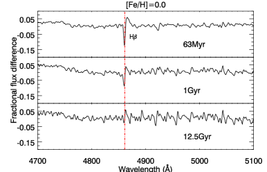
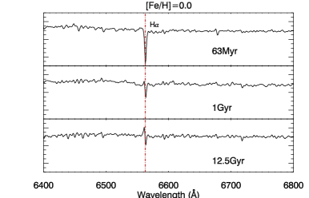
![$\rm [Fe/H]=0.0 $](equations/eq_0053.svg) )، وقد طُبّعت الأطياف عند
)، وقد طُبّعت الأطياف عند  4830Å. اليمين: مقارنة النماذج بتكبير في المجال الأحمر عند الفلزية نفسها، وقد طُبّعت الأطياف عند
4830Å. اليمين: مقارنة النماذج بتكبير في المجال الأحمر عند الفلزية نفسها، وقد طُبّعت الأطياف عند  6520Å. يُشتق فرق التدفق الكسري بأخذ الفرق بين نماذج MILES و
BC03، مطبّعًا إلى نماذج MILES.
6520Å. يُشتق فرق التدفق الكسري بأخذ الفرق بين نماذج MILES و
BC03، مطبّعًا إلى نماذج MILES.لفهم أوجه التشابه والاختلاف بين النماذج في مجالات الأطوال الموجية للخطوط الأربعة الرئيسية المستخدمة في تعريف AGN من النوع الثاني، نكبر SSPs.
في الشكل 3a، نرى
أنه عند الفلزية الشمسية، تتفق هاتان المجموعتان من النماذج إحداهما مع الأخرى وخاصة عند الأعمار الأكبر (12.5 Gyr). غير أن النماذج تُظهر فروقًا في عمق  (الشكل 3b) عند الأعمار الأصغر، مع فرق قدره 7% مرصود لنماذج 1 Gyr.
وعمومًا، تُظهر قوالب MILES خطوط امتصاص بالمر أقوى من BC03.
(الشكل 3b) عند الأعمار الأصغر، مع فرق قدره 7% مرصود لنماذج 1 Gyr.
وعمومًا، تُظهر قوالب MILES خطوط امتصاص بالمر أقوى من BC03.
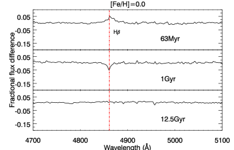
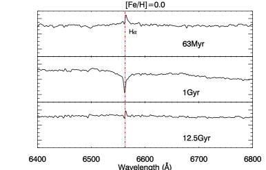
 4830Å. اليمين: مقارنة النماذج
بتكبير في مجالات الأطوال الموجية الحمراء. طُبّعت الأطياف عند
4830Å. اليمين: مقارنة النماذج
بتكبير في مجالات الأطوال الموجية الحمراء. طُبّعت الأطياف عند  6520Å. يُشتق فرق التدفق الكسري بأخذ الفرق بين نماذج MILES و
MS11، مطبّعًا إلى نماذج MILES.
6520Å. يُشتق فرق التدفق الكسري بأخذ الفرق بين نماذج MILES و
MS11، مطبّعًا إلى نماذج MILES.نعرض MS11solar القائم على MILES ونقارنه مع SSPs الخاصة بـ MILES في الشكلين 4a و 4b. وعلى الرغم من أن كلًا من MS11solar وMILES استخدم مكتبة MILES النجمية مُدخلًا بصريًا، فإننا لا نزال نرصد فروقًا ملحوظة في الخطوط وتباينًا في المتصل، بسبب المدخلات الأخرى التي يتكون منها SPM. تميل نماذج MS11 إلى امتلاك خطوط امتصاص بالمر أقوى قليلًا من MILES عند الأعمار الأصغر والأكبر، لكنها تمتلك خطوط امتصاص بالمر أضعف من MILES عند الأعمار المتوسطة (1 Gyr).
4 هل يعتمد تعريف AGN من النوع الثاني على القالب؟
للتحقق من منهجنا وصلاحية نتائجنا، قارنا تدفقات الخطوط لدينا بالقيم
في إصدار بيانات SDSS لمجرات خطوط الانبعاث التي عُرفت بطرح القوالب القائم على MILES. لاحظ أننا
نستخدم نموذج MILES للتجمعات النجمية بينما يستخدم SDSS DR8 نموذج BC03؛
لذلك يُتوقع وجود بعض الفروق في تدفقات خطوط الانبعاث. وتظهر المقارنة بين تدفقات
الخطوط التشخيصية ( ، و[O III] 5007، و
، و[O III] 5007، و و[N II] 6584) من
ملاءاتنا وتلك المستمدة من SDSS ارتباطًا خطيًا جيدًا (انظر ZCF18).
ويكون خط
و[N II] 6584) من
ملاءاتنا وتلك المستمدة من SDSS ارتباطًا خطيًا جيدًا (انظر ZCF18).
ويكون خط  أضعف الخطوط عمومًا، لذلك يكون التشتت أكبر منه في الخطوط الأخرى.
أضعف الخطوط عمومًا، لذلك يكون التشتت أكبر منه في الخطوط الأخرى.
على الرغم من أن تدفقات الخطوط مترابطة جيدًا إجمالًا، فإن تعريف AGN المستند إلى نسب تدفقات الخطوط [O III] 5007/H و[N II] 6584/H
و[N II] 6584/H قد يختلفان اختلافًا مهمًا. وبما أن
المجرات القريبة من الحد هي الأكثر احتمالًا للانتقال بين الفئات (من AGN إلى مجرات مكوِّنة للنجوم أو العكس)،
نبدأ بفحص الفروق في نسب الخطوط باختيار عينة فرعية من الأجرام الواقعة ضمن 0.02 dex من حد Kewley et al. (2001a)
باستخدام قوالب التجمعات النجمية MILES لطرح المجرة المضيفة.
تحتوي هذه العينة الفرعية على 145 مجرة خطوط انبعاث.
قد يختلفان اختلافًا مهمًا. وبما أن
المجرات القريبة من الحد هي الأكثر احتمالًا للانتقال بين الفئات (من AGN إلى مجرات مكوِّنة للنجوم أو العكس)،
نبدأ بفحص الفروق في نسب الخطوط باختيار عينة فرعية من الأجرام الواقعة ضمن 0.02 dex من حد Kewley et al. (2001a)
باستخدام قوالب التجمعات النجمية MILES لطرح المجرة المضيفة.
تحتوي هذه العينة الفرعية على 145 مجرة خطوط انبعاث.
4.1 تباينات تعريف AGN من النوع الثاني
يعرض الشكل 5 مخطط BPT لهذه العينة الحدية، حيث تُعلَّم نسب الخطوط القائمة على MILES بمثلثات
زرقاء، وتُعرض نسب الخطوط القائمة على BC03 (Aihara et al., 2011) بصلبان رمادية، وتُعرض نتيجة MS11solar القائمة على MILES (Thomas et al., 2013)
بمثلثات أرجوانية.
إن نسب الخطوط باستخدام BC03 أعلى منهجيًا من
تلك المحسوبة باستخدام MILES. ومن الواضح أن عددًا أكبر من المجرات يُصنّف AGN عندما تُعالج عملية طرح خلفية المجرة
بقوالب BC03، بينما تُزاح نسب الخطوط الناتجة من استخدام قوالب MS11solar منهجيًا إلى المنطقة المركبة، أي بين حدي Kewley et al. (2001a) وKauffmann et al. (2003).
وتظهر الإزاحة المنهجية لنسب الخطوط من قوالب MS11solar أيضًا في المدرج التكراري،
ولا سيما في نسبة الخط [O III] 5007/ H . تعطي قوالب BC03 نسب [O III] 5007/
. تعطي قوالب BC03 نسب [O III] 5007/ أعلى من MILES، بينما تعطي قوالب MS11solar نسب [O III] 5007/H
أعلى من MILES، بينما تعطي قوالب MS11solar نسب [O III] 5007/H أدنى من MILES. وتبقى نسبة الخط [N II] 6584/H
أدنى من MILES. وتبقى نسبة الخط [N II] 6584/H في مجال مشابه.
في مجال مشابه.
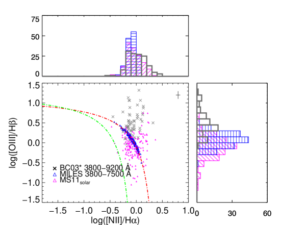
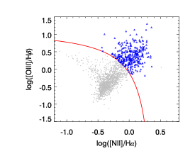
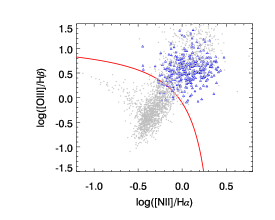
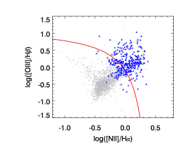
ثم وسّعنا دراستنا إلى عينة خطوط الانبعاث الكاملة المحددة بواسطة طرح قوالب MILES. ويُعرض مخطط BPT لهذه المجرات البالغ عددها 3350 في الشكل 6. وتُعرض مجرات خطوط الانبعاث الضيقة بصلبان رمادية، بينما تُعرض AGN من النوع الثاني (القائمة على MILES) بمثلثات زرقاء. وفي اللوحتين (b) و(c)، نعرض نسب الخطوط المستمدة من التدفقات عند استخدام قوالب BC03 وMS11solar، على الترتيب، للمجرات نفسها. وتعكس الرموز تعريف AGN القائم على طرح قوالب MILES. نرى أن نسب الخطوط القائمة على BC03 تميل إلى التحرك نحو منطقة AGN، باستثناء بضعة شواذ. أما نسب الخطوط القائمة على MS11solar فتتحرك في الاتجاه المعاكس، وينتقل بعض AGN القائمة على MILES إلى المنطقة المركبة.
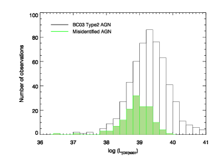
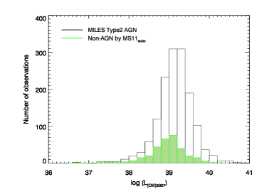
ومن أجل معرفة أي نوع من AGN من النوع الثاني هو الأكثر حساسية لاختيار
القوالب النجمية،
نفحص فئتين من سوء التعريف، آخذين نتيجة
طرح قوالب MILES معيارًا. الفئة الأولى هي AGN من النوع الثاني المحددة بواسطة BC03
لكن غير المحددة بواسطة قوالب MILES، أي “الإيجابيات الكاذبة”؛ والفئة الثانية هي AGN من النوع الثاني المحددة بواسطة قوالب MILES
لكن غير المحددة بواسطة MS11solar، أي “السلبيات الكاذبة”. وبما أن لمعان [O III]
مؤشر إلى لمعان AGN البولومتري، نستخدمه لتحديد ما إذا كان معدل سوء التعريف
يعتمد على نشاط AGN.
نعرض توزع لمعان [O III] لـ AGN من النوع الثاني وفق BC03 في الشكل 7a.
ويبين المدرج التكراري غير المظلل لمعان [O III] لعدد 562 من AGN من النوع الثاني المحددة
باستخدام قوالب BC03، والمختارة من عينة مجرات خطوط الانبعاث في MILES؛
أما المدرج التكراري الأخضر فيبين الإيجابيات الكاذبة. نجد أن 25 من AGN من النوع الثاني في BC03 هي إيجابيات كاذبة11
1
السلبيات الكاذبة من BC03 والإيجابيات الكاذبة من MS11solar مهملة (أقل من 2%)..
وكلما كان الجرم أخفت، زادت احتمالية سوء تعريفه بوصفه AGN.
نعرض نسبة سوء تعريف مرشحي AGN من النوع الثاني بدلالة لمعان [O III] في الشكل 7b. ويوجد أكبر معدل لسوء التعريف،
من AGN من النوع الثاني في BC03 هي إيجابيات كاذبة11
1
السلبيات الكاذبة من BC03 والإيجابيات الكاذبة من MS11solar مهملة (أقل من 2%)..
وكلما كان الجرم أخفت، زادت احتمالية سوء تعريفه بوصفه AGN.
نعرض نسبة سوء تعريف مرشحي AGN من النوع الثاني بدلالة لمعان [O III] في الشكل 7b. ويوجد أكبر معدل لسوء التعريف،  ، للمجرات ذات لمعان [O III] الأخفت من erg
، للمجرات ذات لمعان [O III] الأخفت من erg  .
.
في الشكل 7c، تُعرض AGN من النوع الثاني المحددة بواسطة قوالب MILES في المدرج التكراري غير المظلل.
وتُعرض السلبيات الكاذبة عند استخدام نسب الخطوط من طرح قوالب MS11solar
في المدرج التكراري الأخضر. ويُرصد معدل كلي لسوء التعريف قدره  .
نرسم معدل سوء التعريف بدلالة لمعان [O III]5007
في الشكل 7d: يمكن للأجرام ذات لمعان [O III]5007 الأخفت من erg
.
نرسم معدل سوء التعريف بدلالة لمعان [O III]5007
في الشكل 7d: يمكن للأجرام ذات لمعان [O III]5007 الأخفت من erg  أن يكون لها معدل سوء تعريف يصل إلى .
أن يكون لها معدل سوء تعريف يصل إلى .
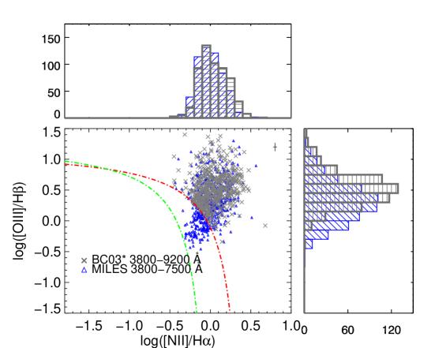
إضافة إلى ذلك، نقصر عينة 2MRS-SDSS على أن تكون لها S/N3 لكل خطوط AGN التشخيصية الأربعة
في مجموعات القوالب الثلاث كلها
لتجنب آثار انخفاض نسبة الإشارة إلى الضجيج، وهو ما يترك 2300 مجرة.
وكما يبين الشكل 8، لا تزال هناك
إزاحة منهجية واضحة بين نسب خطوط BC03 وMILES. نحسب كسر سوء التعريف باستخدام
العينة الجديدة ونحصل على نتيجة مشابهة: 21.5 من AGN من النوع الثاني المحددة باستخدام قوالب BC03 لا تُعرّف AGN عند استخدام قوالب MILES.
وبالمثل، فإن 28.1% من AGN من النوع الثاني وفق MILES تقع أسفل حد Kewley et al. (2001a) عند استخدام التدفقات المشتقة من MS11solar.
من AGN من النوع الثاني المحددة باستخدام قوالب BC03 لا تُعرّف AGN عند استخدام قوالب MILES.
وبالمثل، فإن 28.1% من AGN من النوع الثاني وفق MILES تقع أسفل حد Kewley et al. (2001a) عند استخدام التدفقات المشتقة من MS11solar.
4.1.1 سوء تعريف LINERs وSeyfert II
عُرّفت مناطق خطوط الانبعاث الضيقة منخفضة التأين (LINERs) لأول مرة بواسطة Heckman (1980)،
وهي تختلف عن مجرات Seyfert II. وتمتلك LINERs النموذجية سمات طيفية تهيمن عليها خطوط ناشئة من
حالات تأين منخفضة؛ وتكون لمعاناتها مشابهة لمناطق Hii العملاقة؛ وهي شائعة.
يمكن أن تكون AGN الواقعة فوق حد Kewley et al. (2001a) في
مخطط [O III]/ –[N II]/
–[N II]/ إما LINERs أو Seyfert II.
لذلك من المناسب تقصي ما إذا كانت
LINERs أو Seyfert II تهيمن على معدل سوء التعريف.
إضافة إلى ذلك، اقتُرح أن عرض
إما LINERs أو Seyfert II.
لذلك من المناسب تقصي ما إذا كانت
LINERs أو Seyfert II تهيمن على معدل سوء التعريف.
إضافة إلى ذلك، اقتُرح أن عرض  المكافئ (EW) Å مؤشر إلى LINERs التي تأتي انبعاثاتها
من نجوم حارة متطورة (Cid Fernandes et al., 2010).
وترد المناقشة المفصلة في الملحق A. وباختصار، لا نجد فرقًا مهمًا في
معدل سوء التعريف بين LINERs وSeyfert II. وبما أن أيًا من Seyfert II أو LINERs سيئة التعريف لا يملك
،
فمن غير المرجح أن تكون LINERs سيئة التعريف في عينتنا مشغّلة بنجوم حارة متطورة.
المكافئ (EW) Å مؤشر إلى LINERs التي تأتي انبعاثاتها
من نجوم حارة متطورة (Cid Fernandes et al., 2010).
وترد المناقشة المفصلة في الملحق A. وباختصار، لا نجد فرقًا مهمًا في
معدل سوء التعريف بين LINERs وSeyfert II. وبما أن أيًا من Seyfert II أو LINERs سيئة التعريف لا يملك
،
فمن غير المرجح أن تكون LINERs سيئة التعريف في عينتنا مشغّلة بنجوم حارة متطورة.
4.1.2 الاعتماد على جودة البيانات
تُفصّل دراستنا لكسر سوء التعريف بدلالة الجودة العامة للطيف، أي نسبة S/N للمتصل، في الملحق B. وباختصار، لا نجد ارتباطًا قويًا بين كسر سوء التعريف وجودة البيانات.
4.2 مقارنات القوالب
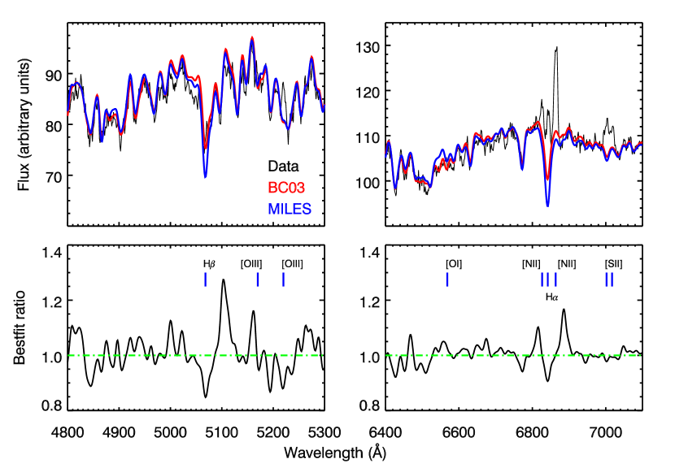
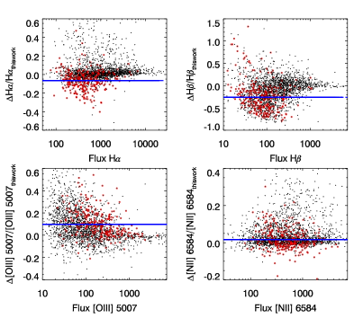
 –[N II]/
–[N II]/ ) القائمة على طرح قوالب MILES
بدوائر حمراء. لاحظ أن تشتتات نسب الخطوط كبيرة. ونعلّم القيم المتوسطة لنسب الخطوط الخاصة بـ AGN من النوع الثاني
بخطوط زرقاء في كل لوحة.
) القائمة على طرح قوالب MILES
بدوائر حمراء. لاحظ أن تشتتات نسب الخطوط كبيرة. ونعلّم القيم المتوسطة لنسب الخطوط الخاصة بـ AGN من النوع الثاني
بخطوط زرقاء في كل لوحة.
يوضح الشكل 9 الفرق في أفضل ملاءمة باستخدام نموذجي التجمعات النجمية MILES وBC03
قوالبَ، مع التكبير على نسب أفضل الملاءمة
حول مناطق الخطوط التي نستخدمها لتعريف مرشحي AGN من النوع الثاني.
تتنبأ أفضل ملاءمة باستخدام نموذج MILES بخطوط بالمر أقوى (أي خطي H وH
وH ) مما
تتنبأ به الملاءمة باستخدام قوالب BC03.
نعرض تباينات التدفق بين النتائج المستمدة من طرح قوالب BC03 وMILES في الشكل 10.
وتُبرز AGN من النوع الثاني المحددة بطرح قوالب MILES بدوائر حمراء.
إن متوسط تدفق H
) مما
تتنبأ به الملاءمة باستخدام قوالب BC03.
نعرض تباينات التدفق بين النتائج المستمدة من طرح قوالب BC03 وMILES في الشكل 10.
وتُبرز AGN من النوع الثاني المحددة بطرح قوالب MILES بدوائر حمراء.
إن متوسط تدفق H من AGN من النوع الثاني في BC03 أخفت بمقدار من التدفق المستمد من قوالب MILES، كما أن ملاءمة خط H
من AGN من النوع الثاني في BC03 أخفت بمقدار من التدفق المستمد من قوالب MILES، كما أن ملاءمة خط H من BC03 أخفت بمقدار .
ولدى معظم AGN من النوع الثاني تدفقات [O III] أقوى من BC03 مقارنة بقوالب MILES.
أما تدفقات [N II] من قوالب BC03 وMILES فهي متسقة إحداها مع الأخرى. كما تصف مجموعات أخرى تفصيليًا عدم دقة خطوط الامتصاص في نموذج BC03 (مثلًا، González Delgado et al., 2005; Koleva et al., 2008).
من BC03 أخفت بمقدار .
ولدى معظم AGN من النوع الثاني تدفقات [O III] أقوى من BC03 مقارنة بقوالب MILES.
أما تدفقات [N II] من قوالب BC03 وMILES فهي متسقة إحداها مع الأخرى. كما تصف مجموعات أخرى تفصيليًا عدم دقة خطوط الامتصاص في نموذج BC03 (مثلًا، González Delgado et al., 2005; Koleva et al., 2008).
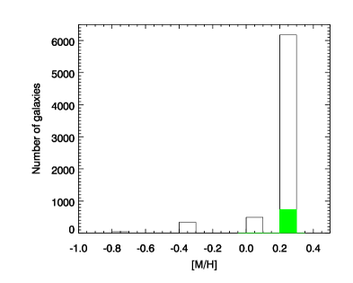
الفروق بين MILES وMS11solar أكثر إثارة للدهشة لأنها تستخدم المكتبة النجمية المدخلة نفسها. وقد يعود هذا الفرق إلى معالجة نجوم TP-AGB التي تؤثر في SSPs بين 0.2 و2 Gyr. غير أننا فحصنا مكوّنات التجمعات النجمية في مجرات العينة، ووجدنا أن منها فقط تحتوي على تجمعات أصغر عمرًا (العمر 2 Gyr). وفي كل من هذه المجرات، تسهم التجمعات النجمية الفتية بأقل من 56% من الضوء البصري. وهذا يعني أن الإزاحة المنهجية لنسب الخطوط عند استخدام MS11solar لا تهيمن عليها المعالجة الخاصة لنجوم TP-AGB.
علاوة على ذلك، نلاحظ أننا استخدمنا كل الفلزيات المتاحة في
نموذج MILES، وتشير أفضل ملاءاتنا إلى أن معظم ( ) مجراتنا تفضل
النماذج الغنية بالمعادن، كما يبين الشكل 11.
وتُبرز العينة الفرعية الخضراء المجرات التي تحتوي على تجمع نجمي واحد فقط.
ورغم صحة وجود انحلال بين العمر والفلزية عند ملاءمة الألوان وحدها، كما
لاحظ Thomas et al. (2013)، فإن هذا الانحلال يُرفع عند ملاءمة خطوط الامتصاص والمتصل في وقت واحد
(مثلًا، Reichardt, Jimenez & Heavens, 2001).
لذلك يؤدي اختيار مجال الفلزية في القوالب دورًا أيضًا في تعريفات AGN من النوع الثاني.
أما المقارنة المفصلة بين نماذج التجمعات النجمية بواسطة Maraston and Strömbäck (2011) و
Vazdekis et al. (2010) فهي خارج نطاق هذا العمل، ولن نتناولها هنا.
) مجراتنا تفضل
النماذج الغنية بالمعادن، كما يبين الشكل 11.
وتُبرز العينة الفرعية الخضراء المجرات التي تحتوي على تجمع نجمي واحد فقط.
ورغم صحة وجود انحلال بين العمر والفلزية عند ملاءمة الألوان وحدها، كما
لاحظ Thomas et al. (2013)، فإن هذا الانحلال يُرفع عند ملاءمة خطوط الامتصاص والمتصل في وقت واحد
(مثلًا، Reichardt, Jimenez & Heavens, 2001).
لذلك يؤدي اختيار مجال الفلزية في القوالب دورًا أيضًا في تعريفات AGN من النوع الثاني.
أما المقارنة المفصلة بين نماذج التجمعات النجمية بواسطة Maraston and Strömbäck (2011) و
Vazdekis et al. (2010) فهي خارج نطاق هذا العمل، ولن نتناولها هنا.
4.3 التجمعات النجمية الفتية ومجال الأطوال الموجية
التجمعات النجمية الفتية (63 Myr) غائبة في كل عائلات القوالب التي نوقشت أعلاه. غير أننا نبين في الملحق C أن نقص التجمعات النجمية الفتية لا يؤثر تأثيرًا مهمًا في تعريفات AGN. نستخدم G05 لاستكشاف التجمعات الفتية لأن SPMs التجريبية الفتية غير متاحة، ونناقش الاتساق بين نموذج G05 ونموذج MILES عند 63 Myr. ويُعرض توسيع نموذج MILES بنماذج التجمعات الفتية G05 ويُستخدم لتعريف AGN حول حد Kewley et al. (2001a). كما فحصنا الفروق الناتجة عن مجالات الأطوال الموجية المستخدمة في طرح المجرة المضيفة في الملحق D. نجد أن التجمعات النجمية الفتية (أي العمر 63Myr) ومجالات الأطوال الموجية المستخدمة في الملاءمة تُحدث فرقًا ضئيلًا أو معدومًا في معدلات تعريف AGN.
5 الاستنتاجات
فحصنا الفروق في التعريف البصري لـ AGN من النوع الثاني
في مجرات قريبة () ذات أطياف SDSS DR8، الناتجة عن
طرح المجرة المضيفة باستخدام MILES وBC03 وMS11solar
قوالبَ نجمية. ووجدنا أن
تعريف AGN من النوع الثاني حساس للقالب النجمي.
وبمقارنة نتائج استخدام SPMs الخاصة بـ BC03 وMILES لطرح خطوط الامتصاص في
بيانات SDSS DR8، قررنا أن ربع العينة يُساء تعريفه بوصفه AGN من النوع الثاني بواسطة
BC03 نسبةً إلى MILES. وتُظهر النتائج باستخدام قوالب MS11solar مجرات أقل محددة AGN نسبةً إلى MILES.
ونجد أيضًا خلافًا إجماليًا قدره مع عمل Thomas et al. (2013)،
الذي استخدم MS11solar لطرح متصل المجرة المضيفة وامتصاصها.
وتتبعنا المشكلة إلى عدم اكتمال مجال الفلزيات في SPMs المستخدمة في ملاءمة القوالب.
إن سوء التعريف، سواء باستخدام BC03 (مثل عمل MPA-JHU، SDSS DR8) أو
باستخدام MS11solar (مثل عمل Thomas et al. (2013))، يكون أعظم للأجرام ذات لمعانات [O III] المنخفضة،
ويصل إلى  عند لمعان [O III]5007 أخفت من
عند لمعان [O III]5007 أخفت من  erg
erg  .
وينبغي أخذ نماذج التجمعات النجمية المستخدمة لطرح مساهمة المجرة المضيفة في الحسبان عند
استخدام تدفقات خطوط الانبعاث أو كسور AGN من فهرس، ولا سيما إذا قورنت نتائج فهارس مختلفة.
.
وينبغي أخذ نماذج التجمعات النجمية المستخدمة لطرح مساهمة المجرة المضيفة في الحسبان عند
استخدام تدفقات خطوط الانبعاث أو كسور AGN من فهرس، ولا سيما إذا قورنت نتائج فهارس مختلفة.
شكر وتقدير
نشكر YuXiao Dai الذي ساعدنا في فحص البيانات وفي بعض المناقشات المفيدة. ونشكر Jong-Hak Woo على النقاش بشأن لمعانات AGN وتعريفاتها. ونشكر المحكّم على تعليقاته واقتراحاته القيّمة. دُعم بحث GRF بمنح National Science Foundation رقم NSF-PHY-1212538 وNSF-AST-1517319، وبواسطة James Simons Foundation.
قُدّم تمويل SDSS-III من Alfred P. Sloan Foundation، والمؤسسات المشاركة، وNational Science Foundation، ومكتب العلوم في وزارة الطاقة U.S.. وموقع SDSS-III على الويب هو http://www.sdss3.org/.
تدير Astrophysical Research Consortium مشروع SDSS-III للمؤسسات المشاركة في تعاون SDSS-III، بما في ذلك University of Arizona، وBrazilian Participation Group، وBrookhaven National Laboratory، وCarnegie Mellon University، وUniversity of Florida، وFrench Participation Group، وGerman Participation Group، وHarvard University، وInstituto de Astrofisica de Canarias، وMichigan State/Notre Dame/JINA Participation Group، وJohns Hopkins University، وLawrence Berkeley National Laboratory، وMax Planck Institute for Astrophysics، وMax Planck Institute for Extraterrestrial Physics، وNew Mexico State University، وNew York University، وOhio State University، وPennsylvania State University، وUniversity of Portsmouth، وPrinceton University، وSpanish Participation Group، وUniversity of Tokyo، وUniversity of Utah، وVanderbilt University، وUniversity of Virginia، وUniversity of Washington، وYale University.
Appendix A سوء تعريف LINERs وSeyfert II
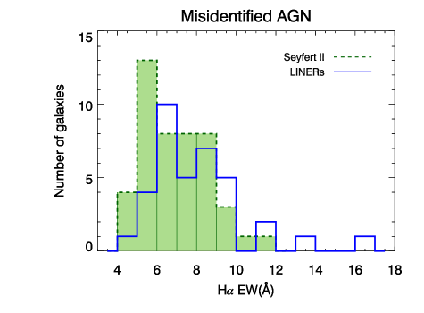
 في Seyfert II وLINERs سيئة التعريف عند استخدام قوالب BC03.
يبين المدرج التكراري غير المظلل توزيع LINERs سيئة التعريف، ويبين المدرج التكراري الأخضر المملوء توزيع EW لـ
في Seyfert II وLINERs سيئة التعريف عند استخدام قوالب BC03.
يبين المدرج التكراري غير المظلل توزيع LINERs سيئة التعريف، ويبين المدرج التكراري الأخضر المملوء توزيع EW لـ  في Seyfert II سيئة التعريف.
في Seyfert II سيئة التعريف.
إن كون مناطق خطوط الانبعاث النووية منخفضة التأين (LINERs) AGN أم لا موضوع
نوقش كثيرًا في الأدبيات. فقد جادل Ho (1996, 2008) وMasegosa et al. (2011)، على سبيل المثال، بأن كسرًا مهمًا من LINERs هو
AGN منخفضة اللمعان. واقترحت دراسات أخرى أن LINERs هي بدلًا من ذلك غاز مسخّن بالصدمات (Dopita & Sutherland, 1995)،
أو نشاط انفجار نجمي (Terlevich & Melnick, 1985; Alonso-Herrero et al, 2000)، أو نجوم ما بعد AGB (Singh et al., 2013). يقترح Cid Fernandes et al. (2010) أن EW لـ  يمكن أن
يميز بين آليات التأين المختلفة التي تؤدي إلى التداخل في منطقة LINER ضمن
المخططات التشخيصية التقليدية. ووفقًا للتوزيع ثنائي النمط لـ EW لـ
يمكن أن
يميز بين آليات التأين المختلفة التي تؤدي إلى التداخل في منطقة LINER ضمن
المخططات التشخيصية التقليدية. ووفقًا للتوزيع ثنائي النمط لـ EW لـ  ، يقترح Cid Fernandes et al. (2011)
أن LINERs ذات EW لـ
، يقترح Cid Fernandes et al. (2011)
أن LINERs ذات EW لـ 
 3 Å يُرجح أن تكون AGN حقيقية، بينما تلك ذات
EW لـ
3 Å يُرجح أن تكون AGN حقيقية، بينما تلك ذات
EW لـ 
 3 Å تكون انبعاثاتها من نجوم حارة متطورة.
3 Å تكون انبعاثاتها من نجوم حارة متطورة.
ومن أجل تمييز طبيعة LINERs في عينتنا باستخدام EW لـ  ، نفصل أولًا
AGN المحددة من نسب الخطوط القائمة على MILES إلى LINERs وSeyfert II باستخدام معايير Kewley et al. (2006).
يبين الشكل 12 LINERs وSeyfert II سيئة التعريف عند استخدام قوالب BC03
بدلالة EW لـ
، نفصل أولًا
AGN المحددة من نسب الخطوط القائمة على MILES إلى LINERs وSeyfert II باستخدام معايير Kewley et al. (2006).
يبين الشكل 12 LINERs وSeyfert II سيئة التعريف عند استخدام قوالب BC03
بدلالة EW لـ  . لا توجد أي من المجرات ذات EW لـ
. لا توجد أي من المجرات ذات EW لـ 
 3 Å.
لذلك لا توجد LINERs مشغّلة بنجوم حارة متطورة، حسب تعريف Cid Fernandes et al. (2010)، في عينتنا سيئة التعريف.
بل ينشأ سوء التعريف أساسًا من تباينات نسب الخطوط بسبب طرح القوالب.
علاوة على ذلك، يبين الشكل 12 أنه لا يُلاحظ فصل واضح في توزيع EW لـ
3 Å.
لذلك لا توجد LINERs مشغّلة بنجوم حارة متطورة، حسب تعريف Cid Fernandes et al. (2010)، في عينتنا سيئة التعريف.
بل ينشأ سوء التعريف أساسًا من تباينات نسب الخطوط بسبب طرح القوالب.
علاوة على ذلك، يبين الشكل 12 أنه لا يُلاحظ فصل واضح في توزيع EW لـ  بين LINERs سيئة التعريف ومجرات Seyfert II.
بين LINERs سيئة التعريف ومجرات Seyfert II.
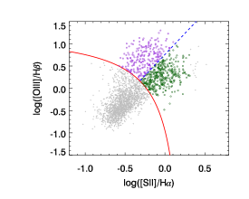
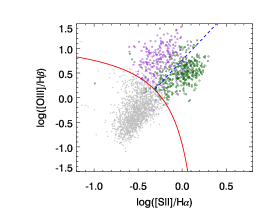
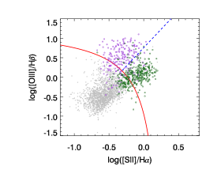
تُعرض نسب الخطوط القائمة على طرح قوالب MILES في الشكل 13، اللوحة (a). وتُقصر المجرات على العينة ذات 3 لكل الخطوط الأربعة في القوالب الثلاثة كلها. وتُعرض Seyfert II باللون الأرجواني وLINERs باللون الأخضر الداكن. كما نعرض نسب الخطوط القائمة على BC03 في اللوحة (b) ونسب الخطوط القائمة على MS11solar في اللوحة (c) للمجرات نفسها. وكما يظهر بوضوح في المخططات، فإن نسب الخطوط المشتقة من عمليات طرح القوالب المختلفة تُظهر إزاحات منهجية. تتحرك نسب الخطوط القائمة على BC03 نحو مناطق AGN/Seyfert II؛ بينما تُظهر نسب الخطوط القائمة على MS11solar الاتجاه المعاكس.
من بين Seyfert II المحددة باستخدام BC03، يقع 20.7% أسفل Kewley et al. (2001a) باستخدام نسب الخطوط القائمة على MILES. وبالمثل، يبلغ معدل الإيجابيات الكاذبة لـ LINERs في BC03 مقدار 14.6%. ويبين استقصاؤنا لنسب الخطوط القائمة على MS11solar معدل سلبيات كاذبة قدره 26.0% لـ Seyfert II ومعدل سلبيات كاذبة قدره 27.7% لـ LINERs. ونحو نصف المجرات سيئة التعريف هي (أو كانت) Seyfert II والنصف الآخر هي (أو كانت) LINERs.
Appendix B الاعتماد على جودة البيانات
نفحص كسر AGN سيئة التعريف مقابل الجودة العامة للطيف، أي
نسبة S/N للمتصل. وبما أن S/N تتغير عند أطوال موجية مختلفة، نختار S/N للمتصل قرب خط
(المشار إليها فيما بعد بـ S/N( )) لهذا الغرض لأن
)) لهذا الغرض لأن  هو أضعف الخطوط الأربعة المستخدمة في تعريف AGN من النوع الثاني.
يبين الشكل 14a توزيع S/N(
هو أضعف الخطوط الأربعة المستخدمة في تعريف AGN من النوع الثاني.
يبين الشكل 14a توزيع S/N( ) لـ AGN من النوع الثاني. يبرز المدرج التكراري الأخضر
AGN من النوع الثاني المحددة عند استخدام قوالب BC03، لكنها لا تُعرّف AGN من النوع الثاني عند استخدام قوالب MILES. ويُظهر معدل سوء التعريف
اعتمادًا ضعيفًا على S/N(
) لـ AGN من النوع الثاني. يبرز المدرج التكراري الأخضر
AGN من النوع الثاني المحددة عند استخدام قوالب BC03، لكنها لا تُعرّف AGN من النوع الثاني عند استخدام قوالب MILES. ويُظهر معدل سوء التعريف
اعتمادًا ضعيفًا على S/N( ) كما يُرى في الشكل 14b.
ويُعرض استكشاف الاعتماد بين لمعان [O III]5007 وS/N(
) كما يُرى في الشكل 14b.
ويُعرض استكشاف الاعتماد بين لمعان [O III]5007 وS/N( )
في الشكل 14c. وتُعرض AGN من النوع الثاني سيئة التعريف بمثلثات حمراء مملوءة. ولا نجد ارتباطًا قويًا.
)
في الشكل 14c. وتُعرض AGN من النوع الثاني سيئة التعريف بمثلثات حمراء مملوءة. ولا نجد ارتباطًا قويًا.
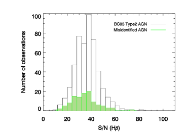
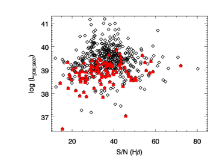
 . اللوحة (a): يبين المدرج التكراري غير المظلل كل
AGN من النوع الثاني المحددة باستخدام قوالب BC03. وتُعرض AGN من النوع الثاني سيئة التعريف في مدرج تكراري أخضر مملوء.
اللوحة (b): معدل سوء التعريف بدلالة متصل قرب خط
. اللوحة (a): يبين المدرج التكراري غير المظلل كل
AGN من النوع الثاني المحددة باستخدام قوالب BC03. وتُعرض AGN من النوع الثاني سيئة التعريف في مدرج تكراري أخضر مملوء.
اللوحة (b): معدل سوء التعريف بدلالة متصل قرب خط  . اللوحة (c): يُعرض
لمعان [O III]5007 لـ AGN من النوع الثاني من طرح قوالب BC03
بدلالة متصل
. اللوحة (c): يُعرض
لمعان [O III]5007 لـ AGN من النوع الثاني من طرح قوالب BC03
بدلالة متصل  قرب خط
قرب خط  بمعينات سوداء. وتُعلَّم AGN من النوع الثاني سيئة التعريف بمثلثات
حمراء مملوءة.
بمعينات سوداء. وتُعلَّم AGN من النوع الثاني سيئة التعريف بمثلثات
حمراء مملوءة.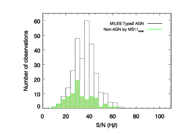
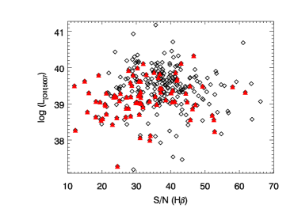
 .
اللوحة (a): يبين المدرج التكراري غير المظلل كل
AGN من النوع الثاني المحددة باستخدام قوالب MS11solar. وتُعرض AGN من النوع الثاني سيئة التعريف في مدرج تكراري أخضر مملوء.
اللوحة (b): معدل سوء التعريف بدلالة متصل
.
اللوحة (a): يبين المدرج التكراري غير المظلل كل
AGN من النوع الثاني المحددة باستخدام قوالب MS11solar. وتُعرض AGN من النوع الثاني سيئة التعريف في مدرج تكراري أخضر مملوء.
اللوحة (b): معدل سوء التعريف بدلالة متصل  قرب خط
قرب خط  . اللوحة (c): يُعرض
لمعان [O III]5007 لـ AGN من النوع الثاني من طرح قوالب MS11solar
بدلالة متصل
. اللوحة (c): يُعرض
لمعان [O III]5007 لـ AGN من النوع الثاني من طرح قوالب MS11solar
بدلالة متصل  قرب خط
قرب خط  بمعينات سوداء. وتُعلَّم AGN من النوع الثاني سيئة التعريف بمثلثات
حمراء مملوءة.
بمعينات سوداء. وتُعلَّم AGN من النوع الثاني سيئة التعريف بمثلثات
حمراء مملوءة.نعرض النتيجة من قوالب MS11solar في الشكل 15.
ويُعرض توزيع S/N( ) لـ AGN من النوع الثاني المحددة من قوالب MILES، لكنها غير محددة من
قوالب MS11solar، في المدرج التكراري الأخضر. ويُعرض معدل سوء التعريف
بدلالة S/N(
) لـ AGN من النوع الثاني المحددة من قوالب MILES، لكنها غير محددة من
قوالب MS11solar، في المدرج التكراري الأخضر. ويُعرض معدل سوء التعريف
بدلالة S/N( ) في الشكل 15b. والنتيجة مشابهة
للمقارنة بين MILES وBC03، باستثناء
حاوية S/N الأولى التي تحتوي إحصاءات منخفضة.
كما نستكشف الاعتماد بين لمعان [O III]5007 وS/N(
) في الشكل 15b. والنتيجة مشابهة
للمقارنة بين MILES وBC03، باستثناء
حاوية S/N الأولى التي تحتوي إحصاءات منخفضة.
كما نستكشف الاعتماد بين لمعان [O III]5007 وS/N( ). وكما يبين
الشكل 15c، تُعرض AGN من النوع الثاني سيئة التعريف بمثلثات حمراء مملوءة. ولا نجد ارتباطًا قويًا.
لذلك فإن سوء تعريف AGN من النوع الثاني ليس عائدًا إلى جودة البيانات.
). وكما يبين
الشكل 15c، تُعرض AGN من النوع الثاني سيئة التعريف بمثلثات حمراء مملوءة. ولا نجد ارتباطًا قويًا.
لذلك فإن سوء تعريف AGN من النوع الثاني ليس عائدًا إلى جودة البيانات.
Appendix C آثار التجمعات النجمية الفتية
C.1 التجمعات النجمية الفتية
عند مقارنة معاملات نموذجي BC03 وMILES في الجدول 1،
نلاحظ أن BC03 يحتوي على تجمعات نجمية أصغر عمرًا من MILES.
ومن الصعب نمذجة التجمعات النجمية الفتية بسبب نقص الأرصاد التجريبية.
تمتلك نماذج BC03 تجمعات نجمية فتية ذات متصل مصحح، لكن
خطوطها لم تُصحح (Bruzual & Charlot, 2003, القسم 2.2.3)، وخصوصًا عند الفلزيات غير الشمسية (González Delgado et al., 2005).
لذلك نلجأ بدلًا من ذلك إلى تجمعات نجمية فتية نظرية.
نوسّع نموذج MILES بإضافة قوالب تجمعات نجمية نظرية فتية من
G05 لتعويض حقيقة أنه لا توجد مكتبات نجمية تجريبية كثيرة تغطي ذلك الفضاء المعلمي.
وكما أشار Charlot & Fall (2000)، فإن التجمعات النجمية الأصغر من  3-4 Myr
لا تسهم في الأطياف المرصودة، لأن سمات امتصاصها مخفية خلف سحابة Hii الكثيفة بصريًا.
لذلك لدينا ثقة بأن
استخدام نماذج González Delgado et al. (2005) عند أصغر عمر قدره 4 Myr كافٍ.
وللتحقق من الاتساق بين نموذج G05 النظري ونموذج MILES،
نقارن أطياف تجمعاتهما عند العمر المشترك 63 Myr، وهو أصغر تجمع نجمي
في نموذج MILES،
عند فلزيتي و
3-4 Myr
لا تسهم في الأطياف المرصودة، لأن سمات امتصاصها مخفية خلف سحابة Hii الكثيفة بصريًا.
لذلك لدينا ثقة بأن
استخدام نماذج González Delgado et al. (2005) عند أصغر عمر قدره 4 Myr كافٍ.
وللتحقق من الاتساق بين نموذج G05 النظري ونموذج MILES،
نقارن أطياف تجمعاتهما عند العمر المشترك 63 Myr، وهو أصغر تجمع نجمي
في نموذج MILES،
عند فلزيتي و![$\rm[Fe/H]=0.0$](equations/eq_0173.svg) (فلزية شمسية). وكما يبين الشكل 16،
فإن نموذجي G05 وMILES متسقان عمومًا أحدهما مع الآخر حتى عند حد نموذج MILES،
مع انحراف أقل من 10 في المئة في أطياف البواقي الخاصة بهما.
(فلزية شمسية). وكما يبين الشكل 16،
فإن نموذجي G05 وMILES متسقان عمومًا أحدهما مع الآخر حتى عند حد نموذج MILES،
مع انحراف أقل من 10 في المئة في أطياف البواقي الخاصة بهما.
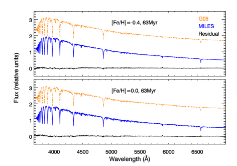
C.2 تعريف AGN مع إضافة التجمعات النجمية الفتية
الاتساق المناقش أعلاه يمنحنا ثقة بأن مزج النماذج النظرية والتجريبية لا يُدخل آثارًا منهجية. وبما أن مجال الطول الموجي في González Delgado et al. (2005) أقصر قليلًا من MILES، فإننا نقتطع نموذج MILES إلى مجال الطول الموجي المشترك Å. وقد وُسّعت كل نماذج التجمعات النجمية الأصغر من 63 Myr من González Delgado et al. (2005) إلى الدقة نفسها التي لدى MILES.
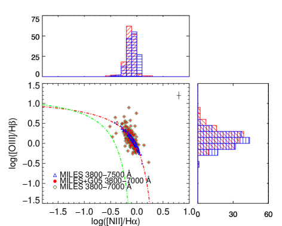
اتباعًا لاستراتيجيتنا الأولية، نقصر العينة على الأجرام الواقعة ضمن 0.02 dex حول
حد Kewley et al. (2001a) في مخطط BPT لاستقصاء تباينات نسب الخطوط.
نلائم أطياف SDSS باستخدام قوالب MILES الموسعة بتجمعات فتية.
وجدنا أن ثلاثة أجرام فقط من أصل 145 مجرة حدية تحتوي على مكوّنات تجمعات فتية، مع
مساهمة أقل من أربعة في المئة في كل حالة. وتعطي ملاءات المجرات الأخرى البالغ عددها 142
نتيجة تكاد تكون مطابقة تمامًا لاستخدام قوالب MILES وحدها ضمن تغطية الطول الموجي نفسها، كما يبين
الشكل 17. بل إن تلك الأجرام الثلاثة نفسها تُظهر إزاحات صغيرة فقط في نسب الخطوط،
 0.03 في [O III] و
0.03 في [O III] و 0.002 في [N II]، وهي أصغر بكثير من أخطاء نسب الخطوط النموذجية.
وكما يظهر من المعينات الزيتونية (MILES
0.002 في [N II]، وهي أصغر بكثير من أخطاء نسب الخطوط النموذجية.
وكما يظهر من المعينات الزيتونية (MILES  تجمعات G05 الفتية) المتداخلة مع النقاط الحمراء
(MILES فقط، مقتطع الطول الموجي إلى المجال نفسه مثل MILES
تجمعات G05 الفتية) المتداخلة مع النقاط الحمراء
(MILES فقط، مقتطع الطول الموجي إلى المجال نفسه مثل MILES  G05)، لا توجد تغيرات مهمة
ناتجة عن إضافة قوالب أصغر عمرًا.
G05)، لا توجد تغيرات مهمة
ناتجة عن إضافة قوالب أصغر عمرًا.
Appendix D الاعتماد على مجال الطول الموجي
درسنا أيضًا ما إذا كان مجال الطول الموجي المستخدم في ملاءمة الطيف وطرح مكوّني الامتصاص والمتصل قد يؤدي دورًا في تعريف AGN. أجرينا هذا الاختبار باستخدام كل من قوالب BC03 وقوالب MILES.
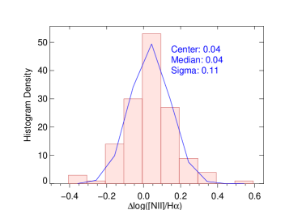
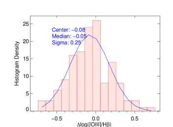
 ؛ وتبين اللوحة اليمنى الفرق في نسبة [O III]/
؛ وتبين اللوحة اليمنى الفرق في نسبة [O III]/ .
.كما ذُكر أعلاه، وسّعنا نماذج MILES بتجمعات نجمية فتية من G05 مع طول موجي مقتطع
3500–7000 Å لأن الحد الأحمر لطول موجة نماذج G05 هو 7000Å.
ويُعرض تباين نسب الخطوط الناتج عن اقتطاع الطول الموجي لقوالب MILES
في الشكل 17. ومقارنة بنسب الخطوط المشتقة من
مجال الطول الموجي الكامل لـ MILES، Å،
تُظهر النتيجة مع قوالب MILES المقتطعة نسب خطوط متشتتة حول حد Kewley et al. (2001a)
لكن بلا آثار منهجية قوية.
ويوضح الشكل 17 توزيع نسب الخطوط: باقتطاع
400–500 Å فقط في الأحمر، تتشتت نسب الخطوط أكثر حول حد Kewley et al. (2001a)، مع تقاسم
مجالات مشابهة لـ [O III]/ و[N II]/
و[N II]/ . نقارن فروق نسب الخطوط في
الشكل 18. ويبين أن مركز [N II]/
. نقارن فروق نسب الخطوط في
الشكل 18. ويبين أن مركز [N II]/ مزاح بمقدار 0.04 dex، وأن
مركز [O III]/
مزاح بمقدار 0.04 dex، وأن
مركز [O III]/ مزاح بمقدار -0.05 dex. وإزاحات نسب الخطين [N II]/
مزاح بمقدار -0.05 dex. وإزاحات نسب الخطين [N II]/ و
[O III]/
و
[O III]/ كلتيهما متسقة مع الصفر ضمن الأخطاء.
كلتيهما متسقة مع الصفر ضمن الأخطاء.
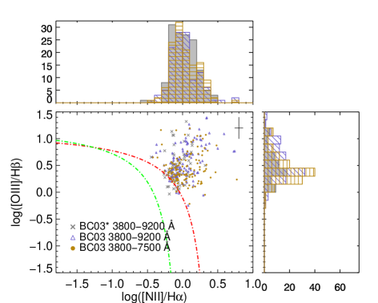
غيّرنا مجال الطول الموجي للملاءمة
إلى  Å عند اختبار قوالب BC03. وتُعرض النتائج في
الشكل 19 لتوضيح الفرق عن مجال الطول الموجي الأصلي للملاءمة البالغ
Å.
وتبين المدرجات التكرارية الرمادية
توزيع نسب خطوط SDSS DR8،
وتبين المدرجات التكرارية الذهبية نسب الخطوط المشتقة بملاءمة الطيف المقتطع باستخدام BC03.
ولا تزال نسب الخطوط من ملاءمة الطول الموجي المقتطع
تتشتت حول المنطقة نفسها في مخطط BPT كما في النتيجة من مجال الطول الموجي الأوسع.
Å عند اختبار قوالب BC03. وتُعرض النتائج في
الشكل 19 لتوضيح الفرق عن مجال الطول الموجي الأصلي للملاءمة البالغ
Å.
وتبين المدرجات التكرارية الرمادية
توزيع نسب خطوط SDSS DR8،
وتبين المدرجات التكرارية الذهبية نسب الخطوط المشتقة بملاءمة الطيف المقتطع باستخدام BC03.
ولا تزال نسب الخطوط من ملاءمة الطول الموجي المقتطع
تتشتت حول المنطقة نفسها في مخطط BPT كما في النتيجة من مجال الطول الموجي الأوسع.
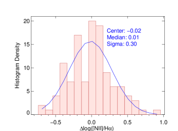
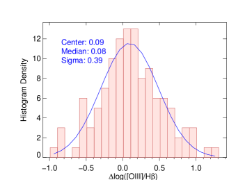
 ؛ وتبين اللوحة اليمنى فرق نسبة الخط [O III]/
؛ وتبين اللوحة اليمنى فرق نسبة الخط [O III]/ .
.يُعرض تحليل منهجي مفصل لنسب الخطوط الخاصة بقوالب BC03 المقتطعة في الشكل 20.
تُرصد إزاحة قدرها 0.08 dex في [O III]/ ، وتُرصد إزاحة قدرها
، وتُرصد إزاحة قدرها  0.01 dex في [N II]/.
ومرة أخرى، فإن إزاحات نسب الخطين [N II]/
0.01 dex في [N II]/.
ومرة أخرى، فإن إزاحات نسب الخطين [N II]/ و
[O III]/
و
[O III]/ كلتيهما متسقة مع الصفر ضمن الأخطاء.
كلتيهما متسقة مع الصفر ضمن الأخطاء.
References
- Aihara et al. (2011) Aihara, H., Allende Prieto, C., An, D., et al., 2011, ApJS, 195, 26A
- Allen et al. (2013) Allen, J. T., Hewett, P. C., Richardson, C. T., Ferland, G. J., Baldwin, J. A., 2013, MNRAS, 430, 3510A
- Alonso-Herrero et al (2000) Alonso-Herrero, A., Rieke, M. J., Rieke, G. H., and Shields, J. C. 2000, ApJ, 530, 688
- Baldwin, Phillips and Terlevich (1981) Baldwin, J. A., Phillips, M. M., Terlevich, R. 1981, PASP, 93, 5B
- Bruzual & Charlot (2003) Bruzual, G. & Charlot, S. 2003, MNRAS, 344, 1000B
- Cappellari & Emsellem (2004) Cappellari, M. & Emsellem, E. 2004 PASP, 116, 138
- Charlot & Fall (2000) Charlot, S. & Fall, S. M., 2000, ApJ, 539, 718C
- Chen et al. (2014) Chen, Yan-Ping, Trager, S. C., Peletier, R. F., et al. 2014, A&A, 565A,117C
- Cid Fernandes et al. (2010) Cid Fernandes, R. and Stasińska, G. and Schlickmann, 2010, MNRAS, 403, 1036C
- Cid Fernandes et al. (2011) Cid Fernandes, R., Stasińska, G., Mateus, A., Vale Asari, N., 2011, MNRAS, 413, 1687
- Conroy & Gunn (2010) Conroy, Charlie & Gunn, James E. 2010, ApJ, 712, 833C
- Conroy (2013) Conroy, C. 2013, ARA&A, 51, 393C
- Dopita & Sutherland (1995) Dopita, M. A., & Sutherland, R. S. 1995, ApJ, 455, 468
- González Delgado et al. (2005) González Delgado, R. M., Cerviño, M., Martins, L. P., Leitherer, C., Hauschildt, P. H. 2005, MNRAS, 357, 945G
- Greene & Ho (2007) Greene, J. E. & Ho, L. C. 2007, ApJ, 667, 131G
- Gregg et al. (2006) Gregg, M. D., Silva, D., Rayner, J., et al. 2006, hstc, conf, 209G
- Hao et al. (2005a) Hao, L., Strauss, M. A., Tremonti, C. A., et al. 2005, AJ, 129, 1783H
- Heckman (1980) Heckman, T. M., 1980, A&A, 87, 152H
- Ho (1996) Ho, L. C., 1996, ASPC, 103, 103H
- Ho et al. (1997) Ho, L. C., Filippenko, A. V., Sargent, W. L. W. 1997, ApJS, 112, 315H
- Ho (2008) Ho, L. C., 2008, ARA&A, 46, 475H
- Huchra et al. (2012) Huchra, J. P., Macri, L. M., Masters, K. L., et al. 2012, ApJS, 199, 26
- Kauffmann et al. (2003) Kauffmann, G., Heckman, T. M., Tremonti, C., et al. 2003, MNRAS, 346, 1055K
- Kewley et al. (2000) Kewley, L. J., Heisler, C. A., Dopita, M. A., et al. 2000, ApJ, 530, 704K
- Kewley et al. (2001a) Kewley, L. J. and Dopita, M. A., Sutherland, R. S., Heisler, C. A., Trevena, J. 2001a, ApJ, 556, 121K
- Kewley et al. (2001b) Kewley, L. J., Heisler, C. A., Dopita, M. A., Lumsden, S. 2001b, ApJS, 132, 37K
- Kewley et al. (2006) Kewley, L. J., Groves, B., Kauffmann, G., Heckman, T. 2006, MNRAS, 372, 961K
- Koleva et al. (2008) Koleva, M., Prugniel, P., Ocvirk, P., Le Borgne, D., Soubiran, C., 2008, MNRAS, 385, 1998K
- Le Borgne et al. (2003) Le Borgne, J.-F., Bruzual, G., Pelló, R., et al. 2003, A&A, 402, 433L
- Le Borgne et al. (2004) Le Borgne, D., Rocca-Volmerange, B., Prugniel, P., et al. 2004, A&A, 425, 881L
- Lejeune, Cuisinier, & Buser (1997) Lejeune, Th., Cuisinier, F., Buser, R. 1997, A&AS, 125, 229L
- Lejeune, Cuisinier, & Buser (1998) Lejeune, Th., Cuisinier, F., Buser, R. 1998, A&AS, 130, 65L
- Maraston and Strömbäck (2011) Maraston, C., Strömbäck, G. 2011, MNRAS, 418, 2785M
- Masegosa et al. (2011) Masegosa, J., Márquez, I., Ramirez, A., González-Martín, O., 2011, A&A, 527A, 23M
- Miller et al. (2003) Miller, C. J. and Nichol, R. C., Gómez, P. L., Hopkins, A. M., Bernardi, M. 2003, ApJ, 597, 142M
- Osterbrock & Pogge (1985) Osterbrock, D., E., Pogge, R., W., 1985, ApJ, 297, 166O
- Prugniel & Soubiran (2001) Prugniel, Ph., Soubiran, C. 2001, A&A, 369, 1048P
- Reichardt, Jimenez & Heavens (2001) Reichardt, C., Jimenez, R., Heavens, A. F., 2001, MNRAS, 327, 849R
- Sánchez-Blázquez et al. (2006) Sánchez-Blázquez, P., Peletier, R. F., Jiménez-Vicente, J., et al. 2006, MNRAS, 371, 703S
-
Singh et al. (2013)
Singh, R., van de Ven, G., Jahnke, K., et al., 2013, A&A, 558A, 43S
- Stasińska et al. (2006) Stasińska, G., Cid Fernandes, R., Mateus, A., Sodré, L., Asari, N. V., 2006, MNRAS, 371, 972S
- Terlevich & Melnick (1985) Terlevich, R., & Melnick, J. 1985, MNRAS, 213, 841
- Thomas et al. (2013) Thomas, D., Steele, O., Maraston, C., et al. 2013, MNRAS, 431, 1383T
- Vazdekis et al. (2010) Vazdekis, A., Sánchez-Blázquez, P., Falcón-Barroso, J., et al. 2010, MNRAS, 404, 1639V
- Vazdekis et al. (2012) Vazdekis, A., Ricciardelli, E., Cenarro, A. J., et al. 2012, MNRAS, 424, 157V
- Vazdekis et al. (2016) Vazdekis, A., Koleva, M., Ricciardelli, E., Röck, B., Falcón-Barroso, J. 2016, MNRAS, 463, 3409V
- Veilluex & Osterbrock (1987) Veilluex, S., Osterbrock, E., E., 1987, ApJS, 63, 295V
- Westera et al. (2002) Westera, P., Lejeune, T., Buser, R., Cuisinier, F., Bruzual, G. 2002, A&A, 381, 524W
- York et al. (2000) York, D. G., Adelman, J., Anderson, Jr., J. E., et al. 2000AJ, 120, 1579Y